Saint Martin Lys
Bornage des terrains
Pour alléger la page sur l'historique de voie ferrée, je crée cette annexe avec les plans de bornage de la vallée de Saint Martin, collection de Paul Dumanois
Commune de Saint Martin Lys - plan de bornage du 20 décembre 1895
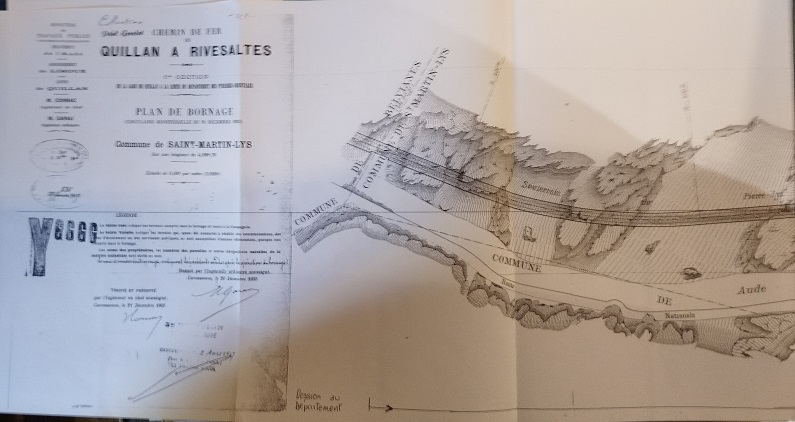
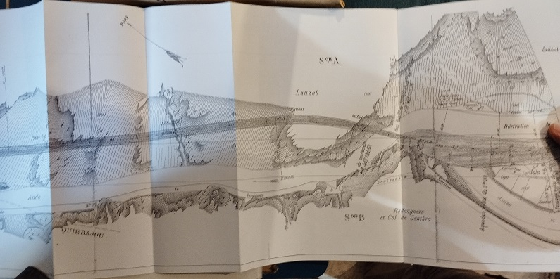
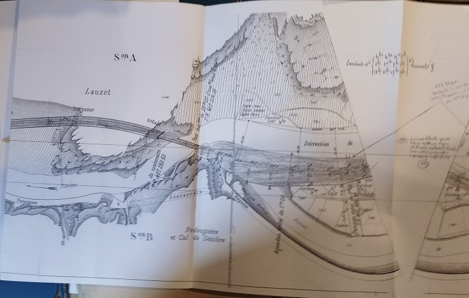
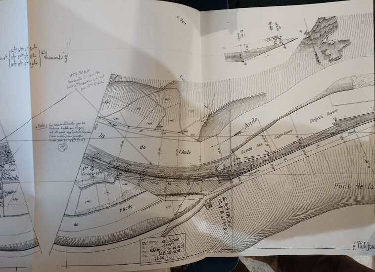
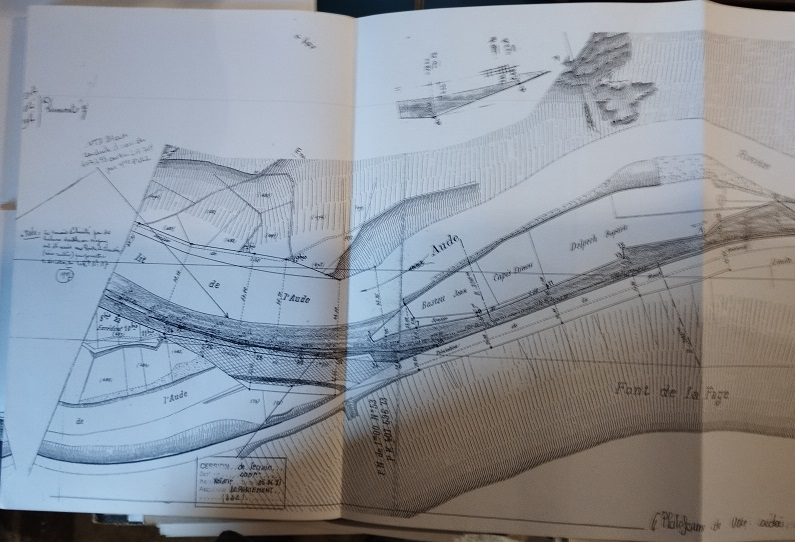
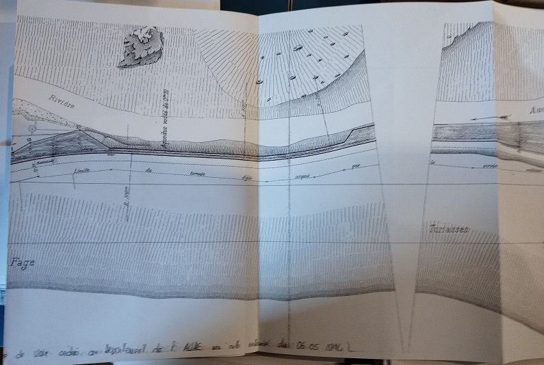
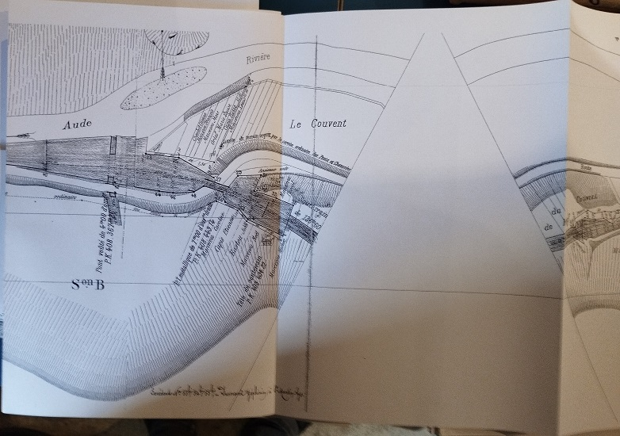
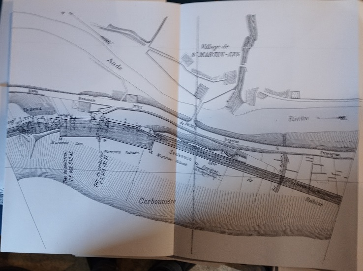
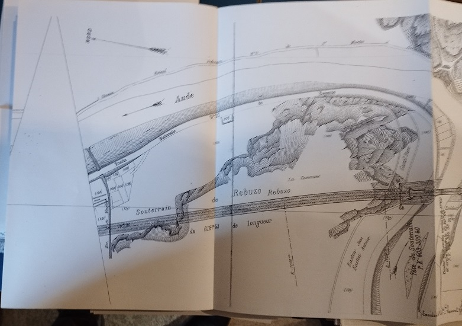
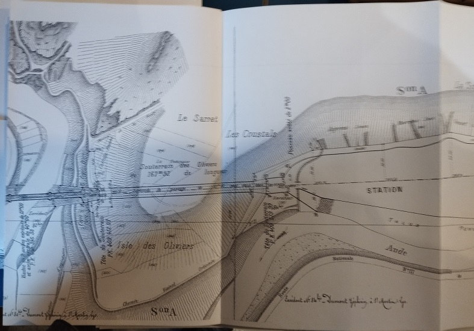
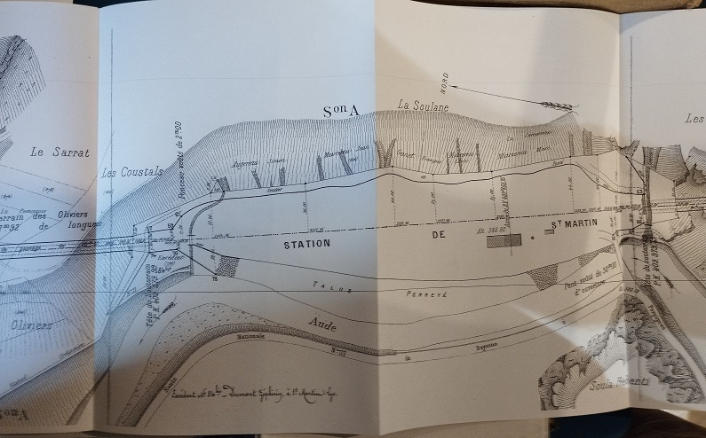
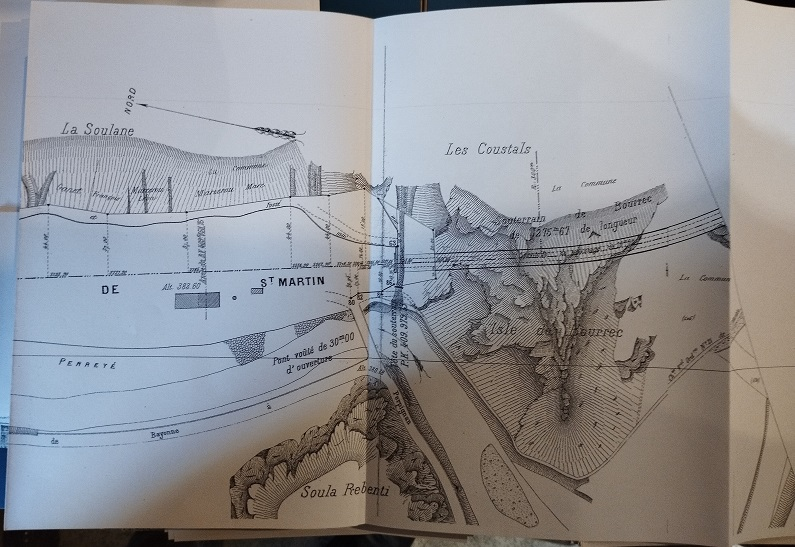
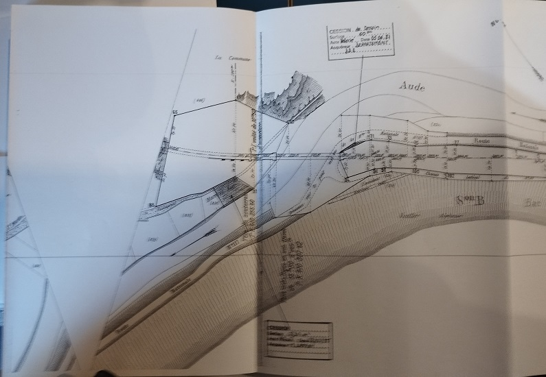
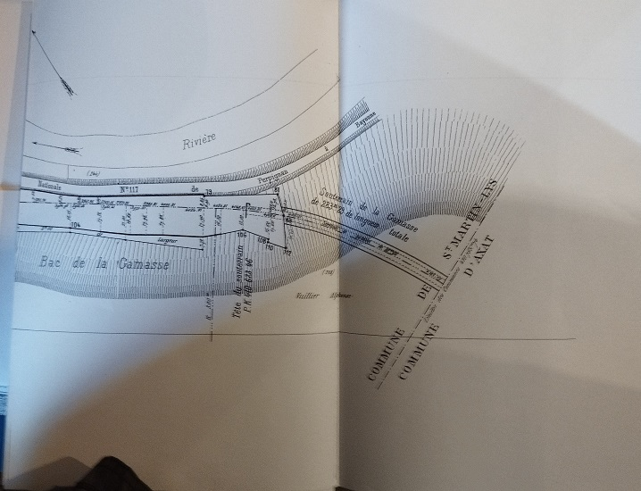
Commune de Belvianes - plan de bornage
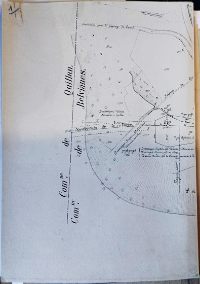
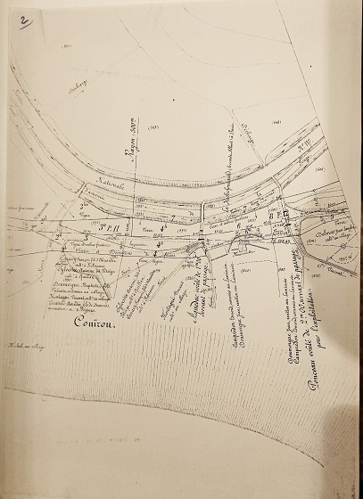
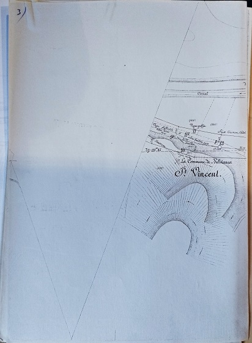
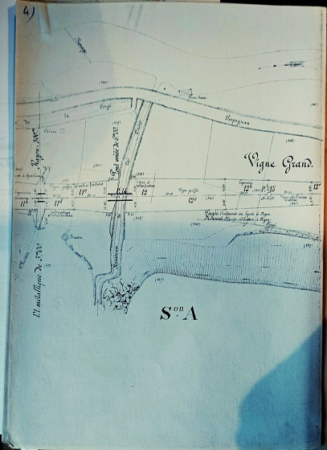
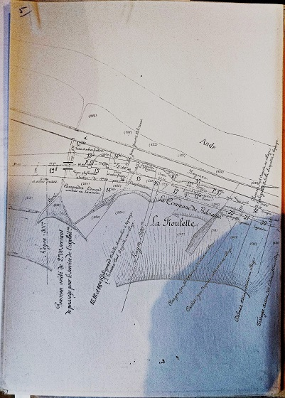
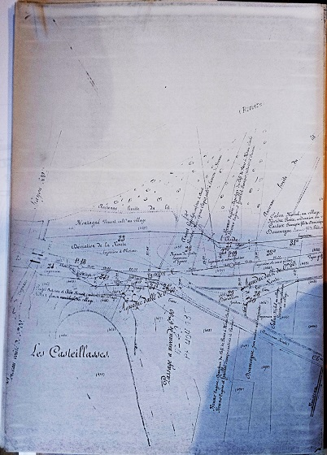
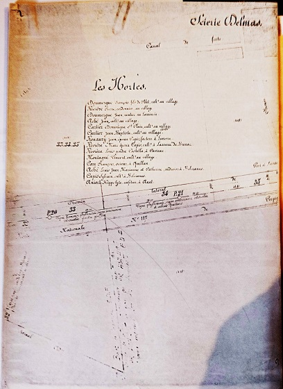
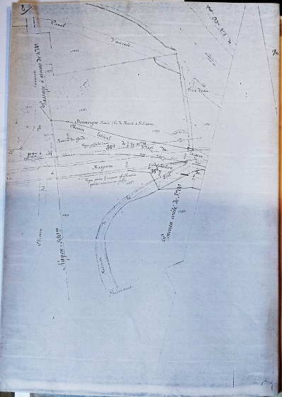
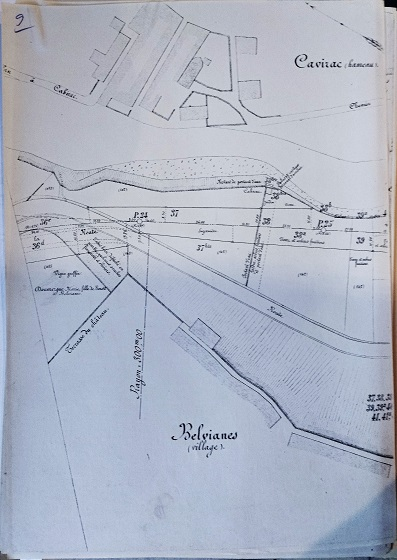
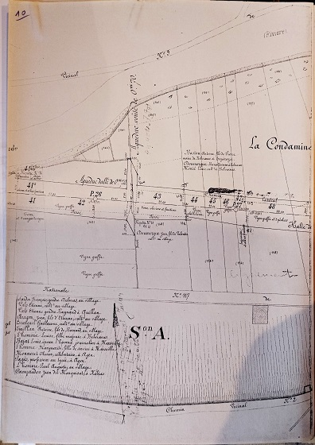
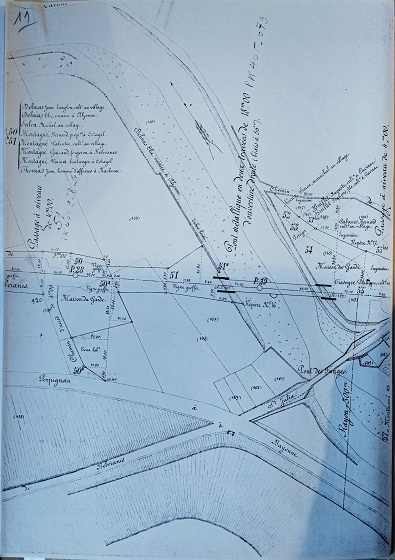
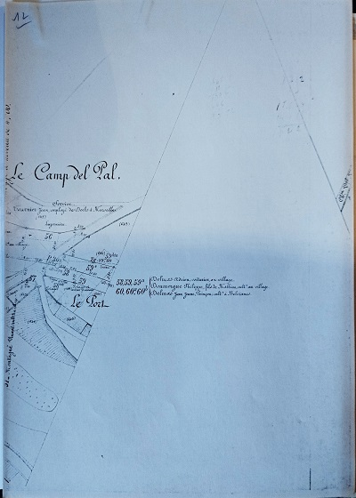
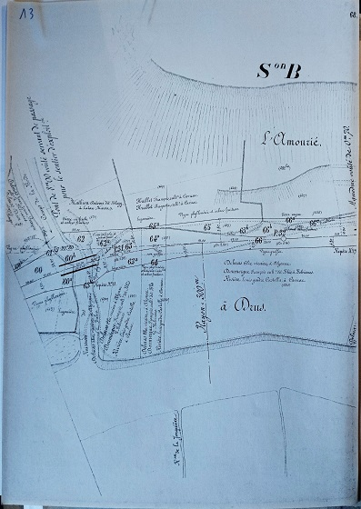
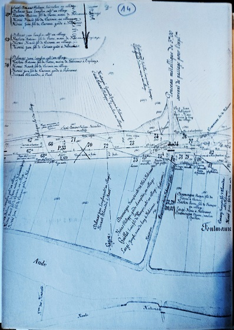
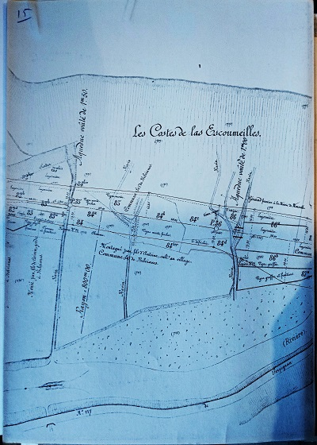
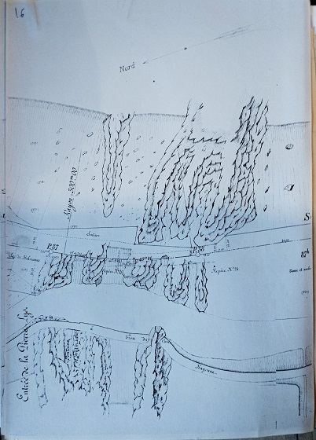
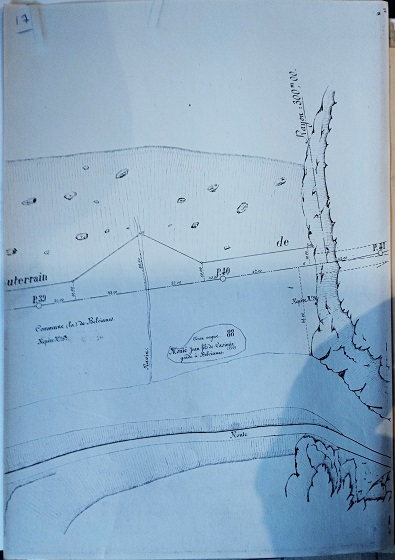
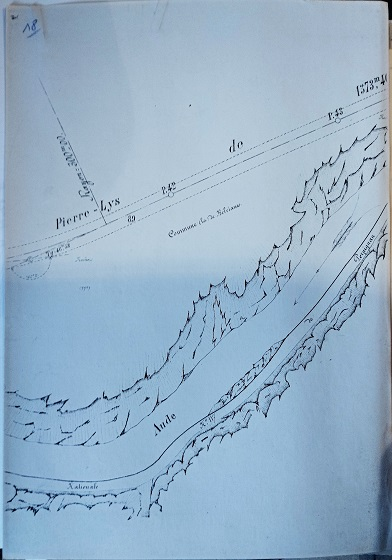
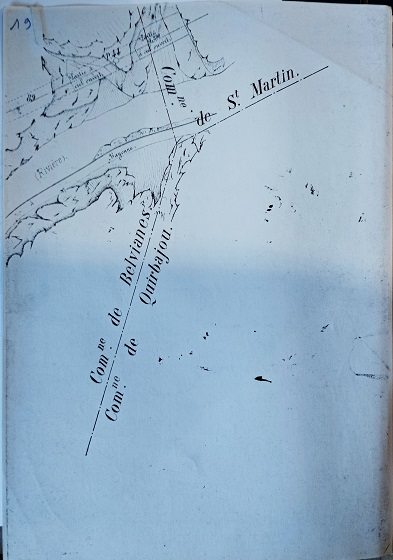
Commentaires
Cliquer ici pour faire un Commentaire
Retour à l'accueil historique voie ferrée